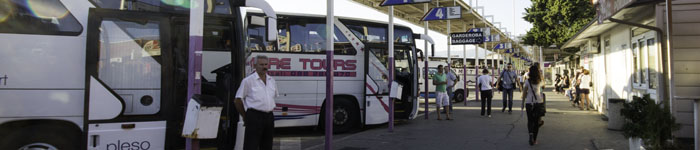
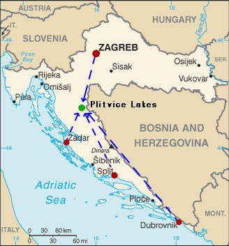

How to Get There?
Plitvice Lakes National Park is not located near a big city so how to get there? By bus, train or car? Were to find timetables? Don’t worry! We know.
• • •
We assume that you can go to Croatia by yourself. Otherwise it would be very complicated for us.
{kind=link}
Arrival
The most common airports are Zagreb, Split, Dubrovnik and Zadar. We would recommend Zagreb and Zadar because they are the closest to the park.
Rent a Car
You can rent a car in all bigger towns and tourist destinations. Daily updated information about the traffic and road conditions are available here.
Author: Cartographer of the United Nations - license
Public Transport
There are both train and bus transportation within Croatia, but the train is not that extensive. Therefore it would be much better to choose the bus if you want to visit the park. Timetables are available at Zagreb Bus Station’s webpage. There you can find a bus from all the bigger cities in Croatia that will take you to Plitvice Lakes.
We have put together a list for those that are interested to go by bus. The list will give you an idea about the travel time from different cities to Plitvice Lakes.
- From Zagreb: 2 h 20 min
- From Zadar: 2 h
- From Split: 5 h 50 min
- From Dubrovnik: 9 h 35 min - (N.B. Only one bus a day – otherwise you can take a bus to Split and change there!)